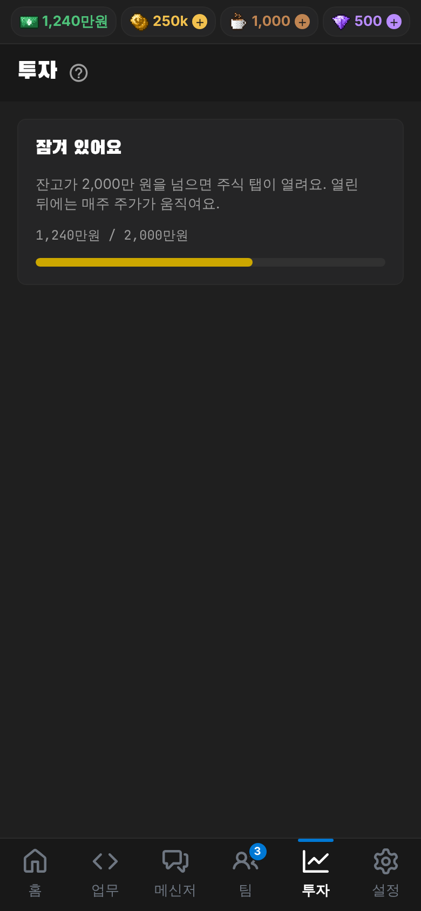
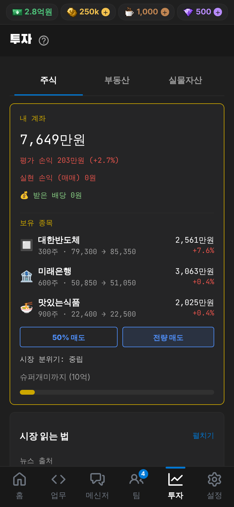
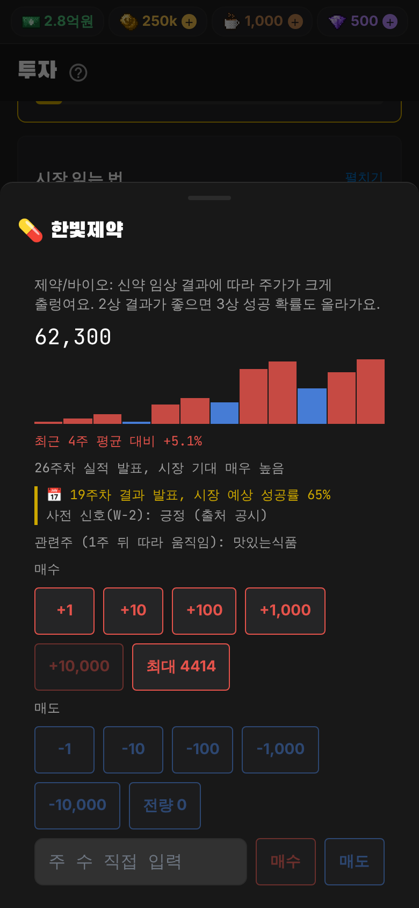
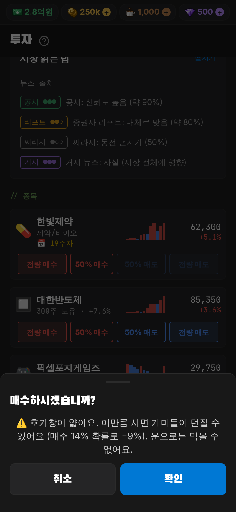
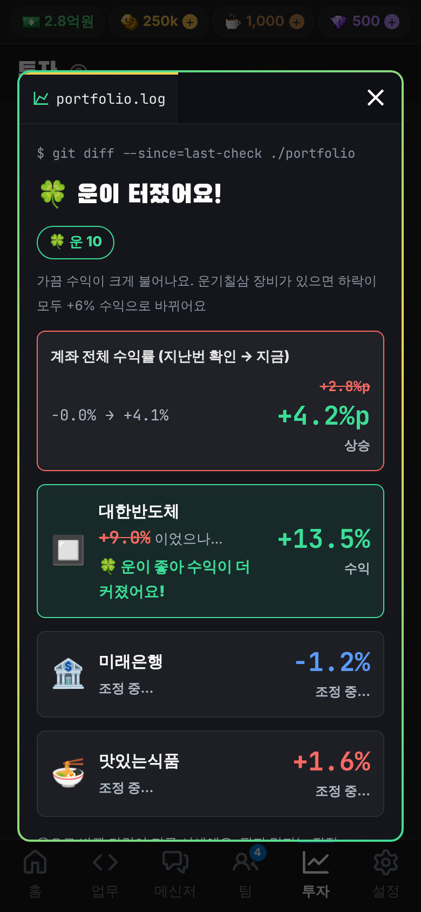
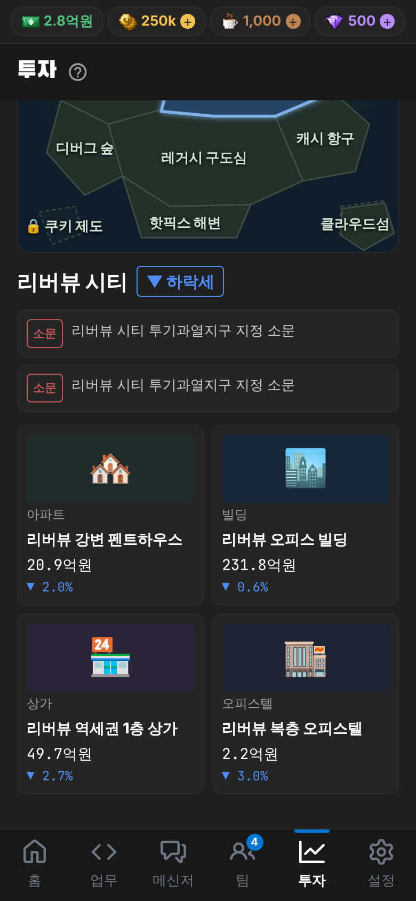
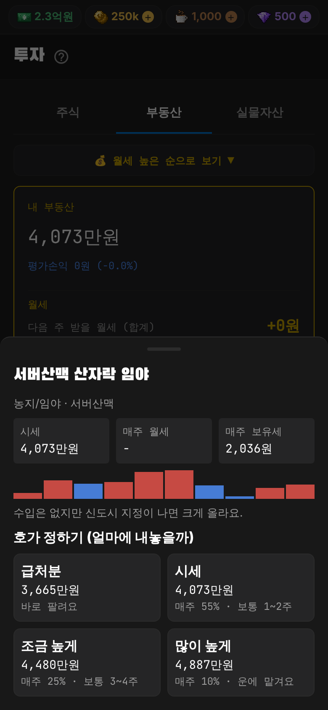
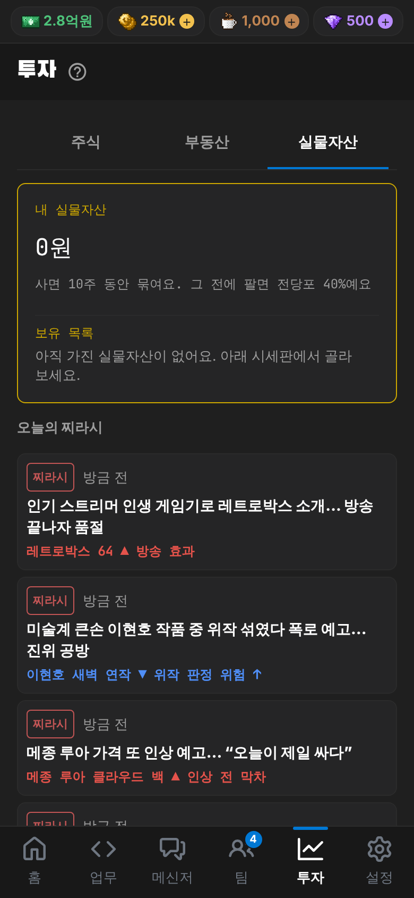
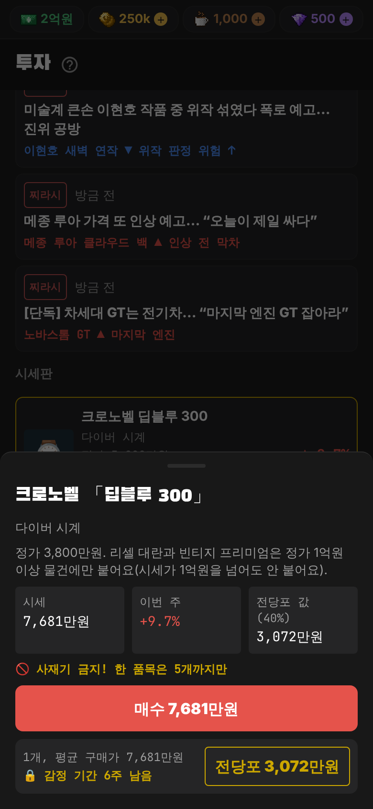
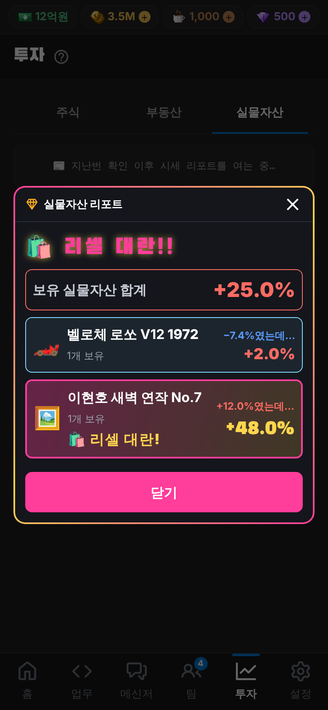

공략집 › 투자
투자 공략
주식 10종목, 부동산 42채, 실물자산 9품목의 구조와 수익률, 추천 운용법과 망하는 패턴, 투자 엔딩까지
- 💰 잔고가 2,000만 원이 되면 투자 탭의 주식, 부동산, 실물자산이 한꺼번에 열려요.
- 📈 주식은 아무 정보 없이 사면 본전이 되게 만든 시장이에요. 돈은 뉴스 출처를 읽는 사람이 벌어요. 공시(90%)는 믿고, 찌라시(50%)는 동전 던지기예요.
- 🏠 부동산은 느리지만 꾸준해요(80주 보유하면 시세만 대략 +25~50%, 월세 따로). 큰 호재 한 방이 터지면 3주 만에 최대 2.2배.
- ⌚ 실물자산은 한 주에 25%까지도 오르내리는 롤러코스터예요. 사면 10주 동안 못 팔고, 새 차는 사는 순간 20%가 날아가요.
- 🏆 투자 엔딩: 슈퍼개미(주식 10억), 섬 주인 3종(섬 매물 3채), 히로인 취향 6종(신혼 중 그녀가 원하는 것 전부).
투자 탭은 언제 열려요? 🔓#
아래 탭바의 투자는 처음엔 잠겨 있어요 상태예요. 회차 중 잔고가 2,000만 원을 넘는 순간(주 마감 때, 또는 그 돈을 들고 투자 탭에 들어가면 그 자리에서) 주식, 부동산, 실물자산이 동시에 열리고, 주 마감에 열리면 로그에 📈 잔고 2,000만 원 돌파! 주식 탭이 열렸어요.가 떠요. 그 뒤로는 매주 주 마감마다 세 시장이 한 주씩 움직여요.

| 하위 탭 | 무엇을 사요 | 성격 | 파는 법 |
|---|---|---|---|
| 📈 주식 | 10종목 | 뉴스를 읽으면 버는 실력 게임 | 언제든 바로 (수수료 0.15%) |
| 🏠 부동산 | 대륙 지도의 고정 매물 42채 | 느리게 오르고 월세가 나와요 | 호가를 정해 내놓기 (급처분은 바로, -10%) |
| ⌚ 실물자산 | 9품목 (품목마다 최대 5개) | 한 주에 크게 오르내리는 유행 상품 | 감정 기간 10주 뒤 시세로 (그 전엔 전당포 40%) |
회차 시작 잔고는 300만 원이에요. 회차 보너스 부모님 지원금을 III단계(누적 +1,800만 원)까지 올리면 2,100만 원으로 시작해서, 1주차에 투자 탭에 들어가는 순간 바로 열려요. 슈퍼개미는 시작이 빠를수록 압도적으로 유리하거든요(아래 표).
순자산과 계급 💳#
게임이 말하는 순자산(총자산)은 현금, 주식, 부동산, 실물자산을 전부 합친 값이에요. 이 값으로 명함 카드와 홈 얼굴의 계급이 정해지고(얼굴 소품이 반창고와 땀 → 없음 → 안경과 넥타이 → 선글라스와 금목걸이 → 외눈 안경과 콧수염 → 왕관 순으로 바뀌어요), 쿠키 제도(50억)가 열려요.
| 계급 | 순자산 | 계급 | 순자산 |
|---|---|---|---|
| 텅장 인턴 | 0원~ | 졸부 | 10억 원~ |
| 적금 요정 | 1,000만 원~ | 건물주 | 50억 원~ |
| 개미 투자자 | 5,000만 원~ | 갑부 | 100억 원~ |
| 억 소리 나는 사원 | 1억 원~ | 재벌 | 1,000억 원~ |
| 알부자 | 5억 원~ | 1조 클럽 회장님 | 1조 원~ |
참고로 업적 1억 모으기는 순자산이 아니라 현금 잔고 1억 원이에요.
📈 주식: 뉴스를 읽는 사람이 이겨요#

종목 10개 한눈에#
변동성은 한 주에 보통 얼마나 출렁이나, 베타는 시장 분위기에 얼마나 휩쓸리나예요. 배당은 4주 보유할 때마다 1번 나오는 금액(주가 대비)이에요.
| 종목 | 업종 | 시작가 | 주간 변동성 | 베타 | 배당 (4주마다) | 예정 이벤트 |
|---|---|---|---|---|---|---|
| 💊 한빛제약 | 제약/바이오 | 48,000원 | 6% | 0.6 | 없음 | 신약 임상 3상 (±29.7%) |
| 🔲 대한반도체 | 반도체 | 72,000원 | 3.5% | 1.4 | 0.12% | 없음 |
| 🎮 픽셀포지게임즈 | 게임 | 31,000원 | 5% | 1.1 | 없음 | 신작 출시 (±15.0%) |
| 🏦 미래은행 | 은행 | 52,000원 | 1.5% | 0.7 | 0.37% | 없음 |
| 🚗 그린모터스 | 전기차 | 95,000원 | 4.5% | 1.3 | 없음 | 없음 |
| 🍜 맛있는식품 | 식품 | 21,000원 | 1.2% | 0.3 | 0.31% | 없음 |
| 🚢 한바다조선 | 조선 | 18,000원 | 4% | 1.0 | 없음 | 대형 수주 (±16.2%) |
| 🎤 별빛엔터 | 엔터테인먼트 | 40,000원 | 5% | 0.9 | 없음 | 간판 그룹 컴백 (±13.9%) |
| ☁️ 구름클라우드 | IT/클라우드 | 66,000원 | 3% | 1.2 | 없음 | 대형 수주 (±16.2%) |
| 📡 한결통신 | 통신 | 34,000원 | 1% | 0.4 | 0.34% | 없음 |
시작가는 매 회차 같아요. 배당을 1년(52주) 기준으로 바꾸면 미래은행 4.8%, 한결통신 4.4%, 맛있는식품 4.0%, 대한반도체 1.6%예요.
주가는 이렇게 움직여요#
주가는 기본 가치, 과열, 이벤트 기대감 세 가지가 합쳐져서 움직여요.
- 기본 가치: 매주 조금씩 오르내리고(노이즈), 회사마다 숨은 이번 분기 추세만큼 살짝 끌려가요. 시장 분위기가 좋으면 베타만큼 같이 올라요.
- 과열: 뉴스에 사람들이 과하게 반응한 부분이에요. 매주 40%씩 사라져요. 그래서 크게 튄 주가는 일부 되돌아와요.
- 이벤트 기대감: 예정 이벤트가 다가오면 미리 올라 있다가, 결과가 나오는 순간 사라지고 결과가 반영돼요.
뉴스 출처 4가지: 이게 전부예요 📰#
시장 뉴스마다 출처 라벨이 붙고, 출처마다 맞을 확률이 고정이에요. 화면의 시장 읽는 법을 펼쳐도 같은 내용이 나와요.
| 출처 | 맞을 확률 | 언제 나와요 | 사람들 반응 |
|---|---|---|---|
| 공시 | 90% | 이벤트 예고, 사전 신호(40%), 결과, 실적 발표 | 결과 자체 |
| 리포트 | 78% | 분기 5~11주째, 종목마다 주 16% | 보통 |
| 찌라시 | 50% | 리포트가 안 나온 주엔 종목마다 5%, 이벤트 사전 신호(60%, 이땐 55%) | 제일 큼 |
| 거시 | 100% | 매주 12%: AI 투자 붐, 경기 침체 우려, 기준금리 인상, 금리 인하 기대 | 시장 분위기 전체 |
시장 분위기는 비관, 약세, 중립, 강세, 낙관 5단계로 보이고, 시간이 지나면 조금씩 중립으로 돌아가요. AI 투자 붐, 경기 침체는 분위기를 크게, 금리 소식은 조금 움직여요. 반도체, 전기차, 클라우드처럼 베타가 큰 종목이 제일 크게 휩쓸려요.
찌라시는 맞을 확률이 정확히 반반인데 사람들은 리포트보다 더 크게 반응해요. 찌라시에 따라 산 주가는 다음 주부터 과열이 빠지면서 되돌아오기 쉬워요. 좋은 찌라시가 뜬 종목을 산다는 80주 뒤 보통 -7.7%예요.
실적 발표: 기대와의 차이에 움직여요#
실적은 경력 13주마다(13, 26, 39, 52, 65, 78, 91주차) 주 마감에 나와요. 종목 상세에 N주차 실적 발표, 시장 기대 매우 낮음~매우 높음이 보여요.
- 숨은 추세회사마다 이번 분기 추세가 숨어 있어요. 리포트가 78% 확률로 그 방향을 알려 줘요.
- 시장 기대리포트, 찌라시가 나올 때마다 기대가 조금씩 움직여요(찌라시는 더 조금). 화면에 보이는 값이에요.
- 발표주가는 실제 추세와 시장 기대의 차이만큼 움직이고, 변동성이 큰 종목일수록 크게 움직여요. 여기에 과열이 조금 더 얹혀요(곧 빠짐). 실제가 기대보다 확실히 좋으면 어닝 서프라이즈!, 확실히 나쁘면 어닝 쇼크…, 비슷하면 기대 부합.
- 다음 분기시장은 이번 분기가 좋으면 다음 분기도 좋을 거라고 크게 기대하는데, 실제 추세는 그만큼 이어지지 않아요. 그래서 대박 분기 다음엔 기대가 너무 높아서 쇼크가 나기 쉬워요.
분기 후반(8~12주째)에 리포트가 같은 방향으로 여러 번 나왔는데 시장 기대가 아직 보통이면 기회예요. 반대로 발표 직후 급등한 종목은 이미 과열이 얹힌 가격이라 늦어요.
예정 이벤트: 공시 사전 신호가 핵심 ⭐#
한빛제약, 픽셀포지게임즈, 한바다조선, 별빛엔터, 구름클라우드는 이벤트가 없을 때 매주 6% 확률로 4주 뒤 발표 예고가 떠요. 결과는 예고 순간 50:50으로 이미 정해져 있어요.

| 남은 주 | 무슨 일 | 주가 |
|---|---|---|
| 4주 (예고) | 공시로 예고, 시장 예상 성공률 50% | 목표 기대감의 30% 반영 |
| 3주 | — | 50% 반영 |
| 2주 | 사전 신호: 40%는 공시(90% 맞음), 60%는 찌라시(55% 맞음). 긍정이면 시장 예상 65%, 부정이면 35% | 75% 반영 |
| 1주 | — | 100% 반영 |
| 결과 | 성공/실패 공시, 기대감은 사라지고 결과가 기본 가치에 반영(과열이 조금 더 얹혀요) | 임상 ±29.7%, 수주 ±16.2%, 신작 ±15.0%, 컴백 ±13.9% |
기대감은 시장이 예상하는 성공률이 높을수록 커지고, 웃돈도 조금 얹혀 있어요. 임상 기준으로 예상 50%면 결과 직전 주가가 약 +3.9%, 65%면 +12.4%, 35%면 -5.4% 올라(내려) 있어요. 시장은 신호의 출처를 따지지 않고 65%/35%로 똑같이 움직이니까, 출처를 보는 사람만 이득이에요.
- 예고가 뜨면 사서 기대감 상승을 먹어요(발표가 다가올수록 점점 올라요).
- 2주 전 신호가 공시 + 긍정이면 결과까지 들고 가요(90% 성공).
- 신호가 찌라시거나 부정이면 결과 전에 팔아요. 찌라시 긍정은 55%밖에 안 맞는데 웃돈까지 얹혀 있어서 들고 가면 평균적으로 손해예요.
관련주: 1주 뒤에 따라 움직여요#
실적 서프라이즈나 이벤트 결과의 영구분이 관련 기업에 다음 주 일부만큼 번져요. 가중치가 클수록 많이 따라 움직여요.
| 소식 난 종목 | 따라 움직이는 종목 (가중치) |
|---|---|
| 대한반도체 | 구름클라우드 0.4, 그린모터스 0.3 |
| 구름클라우드 | 대한반도체 0.3, 한결통신 0.2 |
| 그린모터스 | 대한반도체 0.25 |
| 픽셀포지게임즈 ↔ 별빛엔터 | 서로 0.3 |
| 한바다조선 | 미래은행 0.2 |
| 한빛제약 | 맛있는식품 0.1 |
수수료, 단타세, 배당#
- 수수료: 살 때, 팔 때 각각 0.15%.
- 단타세: 마지막으로 산 뒤 2주 안에 팔면 0.2% 더. 추가 매수하면 2주가 다시 시작돼요(종목 상세에 ⚠ 산 지 얼마 안 됐어요가 떠요).
- 배당: 미래은행, 맛있는식품, 한결통신, 대한반도체는 처음 산 뒤 4주마다 그때 들고 있는 수량 전부에 배당이 나와요. 보유 주수는 추가 매수로 초기화되지 않고, 전부 팔면 처음부터예요. 받은 배당은 실현 손익에 들어가요.
배당 카운트는 처음 산 날부터 세고 지급은 그때 보유 수량 전부라서, 1주만 미리 사 두고 배당 직전 주에 크게 사도 4주치 배당을 다 받아요. 상세의 💰 4주 보유할 때마다 배당 N% (다음 배당까지 N주)를 보세요.
빠른 매매 버튼은 종목마다 전량 매수, 50% 매수, 50% 매도, 전량 매도, 계좌 카드에는 보유 종목 전량 매도, 보유 종목 50% 매도가 있어요. 수수료가 없어지는 장비는 단타는 못참쥐~예요.
개미 폭탄 매도: 한 종목 2억 원이 한계예요 💣#
한 종목 평가액이 2억 원 이상이면 호가창이 얇아요. 매주 일정 확률로 개미들이 던져서 주가가 떨어지고, 이건 운(운기칠삼 포함)으로 못 막아요.
| 한 종목 평가액 | 매주 터질 확률 | 터지면 하락 |
|---|---|---|
| 2억 원 미만 | 0% | — |
| 2억 원 | 10% | -8% |
| 3억 원 | 15% | -9% |
| 4억 원 | 20% | -10% |
| 6억 원 | 30% | -12% |
| 10억 원 이상 | 50% (최대) | -16% |
| 14억 원 이상 | 50% | -20% (최대) |
한 종목에 많이 넣을수록 터질 확률도, 하락폭도 커져요. 빠른 매수로 2억 원을 넘기려 하면 확인창이 먼저 떠요.

운: 주식 탭을 열 때마다 굴려요 🍀#
보유 종목이 있고 지난번 확인 뒤 1주 이상 지났으면, 주식 탭을 열 때 지난번 확인 이후 내 주식 보고서가 떠요. 이때 종목마다 지난번 본 가격(처음엔 평균 매수가) 대비 움직임에 운이 붙어요. 운은 한 주에 한 번만 굴리니까, 같은 주에 다시 열어도 새로 굴리지 않아요.

| 운 10 (기본) | 운기칠삼 (운 70) | |
|---|---|---|
| 떨어진 종목 | -5% 이상 빠졌을 때만, 5% 확률로 +4%로 구조 | 조금이라도 빠지면 100% +6%로 구조 |
| 오른 종목 (+2% 이상) | 4% 확률로 오른 폭이 1.5배 | 28% 확률로 오른 폭이 4.5배 |
| 상한 | 최대 +60%. 주식 평가액 10억 원부터 운이 점점 줄고(20억이면 절반), 30억 원 이상이면 없어요 계좌가 커서 운이 따르지 않았어요 | |
| 예외 | 그사이 개미 폭탄 매도를 맞은 종목엔 운이 안 붙어요 | |
운이 붙으면 그 주가가 진짜로 그 값이 돼요(기본 가치까지 바뀌어서 저절로 빠지지 않아요). 10종목을 나눠 산 뒤 운 10으로 매주 확인하면 80주 뒤 보통 +13.0%, 한 번도 안 열면 +3.9%예요. 운 10이라도 매주 여는 게 이득이에요.
🏠 부동산: 느리지만 배신하지 않아요#
본토 매물은 80주 들고 있으면 시세만 대략 +25~50%, 월세가 붙는 종류는 여기에 +12~45%가 더 붙어요. 큰 호재 뉴스가 뜬 주에 사면 4주 뒤 평균 약 +40%예요.

매물 종류 9개#
월세, 보유세는 매주 그 매물 가격에 대한 비율로 나와요(주 마감 로그 🏠 월세 +…, 보유세 -…).
| 종류 | 가격 범위 | 주간 월세 | 주간 보유세 | 큰 호재 (배수) |
|---|---|---|---|---|
| 🌾 농지/임야 | 2,000만~1억 | 0 | 0.005% | 신도시 지정 (2.2배) |
| 🛏️ 원룸 | 7,000만 | 0.2% | 0.01% | 역세권 개발 (1.4배) |
| 🏬 오피스텔 | 1억~3억 | 0.22% | 0.02% | 역세권 확정 (1.5배) |
| 🏘️ 아파트 | 3억~50억 | 0.12% | 0.02% | 재건축 확정 (1.8배) |
| 🏡 전원주택/별장 | 5억~20억 | 0 | 0.015% | 전원 관광단지 지정 (1.5배) |
| 🏪 상가 | 3억~50억 | 0.3% | 0.02% | 대형 쇼핑몰 입점 확정 (1.6배) |
| 🏭 물류창고 | 20억~100억 | 0.25% | 0.03% | 물류 허브 지정 (1.5배) |
| 🏖️ 펜션/리조트 | 10억~80억 | 0.3% (성수기 2배, 비수기 절반) | 0.03% | 관광특구 지정 (1.7배) |
| 🏙️ 빌딩 | 50억~300억 | 0.22% | 0.04% | 용적률 상향과 랜드마크 지정 (1.5배) |
- 상가는 그 지역에 상권 공실 급증이 진짜로 뜨면 4주 동안 월세 0원이에요.
- 리조트는 13주 단위로 성수기(월세 2배), 보통, 성수기, 비수기(월세 절반) 순서로 돌아요. 성수기엔 화면에 🌞 성수기 🌞가 떠요.
- 원룸, 오피스텔, 아파트, 별장은 살 수 있는 집이라 동거, 신혼과 이어져요(아래).
지역 11곳과 고정 매물 42채 🗺️#
지역마다 매물이 고정이에요(본토 4채, 섬 3채, 레거시 구도심만 원룸 1채 더). 매 회차 같은 이름, 같은 기본가로 나오고, 내가 사면 목록에서 빠졌다가 팔면 그날 시세로 돌아와요. 아래 가격은 기본가(시장이 열린 날의 가격)이고 월세, 보유세는 그 가격 기준 주간 금액이에요.
서버산맥 지역 배수 0.8
| 매물 | 종류 | 기본가 | 주간 월세 | 주간 보유세 |
|---|---|---|---|---|
| 서버산맥 산자락 임야 | 농지/임야 | 4,000만 원 | 0 | 2,000원 |
| 서버산맥 통나무 전원주택 | 전원주택/별장 | 10.6억 원 | 0 | 15.9만 원 |
| 서버산맥 스키장 앞 리조트 | 펜션/리조트 | 50억 원 | 1,500만 원 | 150만 원 |
| 서버산맥 과수원 | 농지/임야 | 4,000만 원 | 0 | 2,000원 |
새벽만 신도시 지역 배수 1.1
| 매물 | 종류 | 기본가 | 주간 월세 | 주간 보유세 |
|---|---|---|---|---|
| 새벽만 34평 신축 | 아파트 | 18.8억 원 | 225.6만 원 | 37.6만 원 |
| 새벽만 역세권 오피스텔 | 오피스텔 | 2.3억 원 | 50.6만 원 | 4.6만 원 |
| 새벽만 카페거리 2층 상가 | 상가 | 42.1억 원 | 1,263만 원 | 84.2만 원 |
| 새벽만 개발 예정지 옆 땅 | 농지/임야 | 6,000만 원 | 0 | 3,000원 |
커밋평야 지역 배수 0.7
| 매물 | 종류 | 기본가 | 주간 월세 | 주간 보유세 |
|---|---|---|---|---|
| 커밋평야 논 1,200평 | 농지/임야 | 3,000만 원 | 0 | 1,500원 |
| 커밋평야 저온 물류창고 | 물류창고 | 44.8억 원 | 1,120만 원 | 134.4만 원 |
| 커밋평야 마당 넓은 단층집 | 전원주택/별장 | 11.4억 원 | 0 | 17.1만 원 |
| 커밋평야 밭 800평 | 농지/임야 | 4,000만 원 | 0 | 2,000원 |
리버뷰 시티 지역 배수 1.4
| 매물 | 종류 | 기본가 | 주간 월세 | 주간 보유세 |
|---|---|---|---|---|
| 리버뷰 강변 펜트하우스 | 아파트 | 23.9억 원 | 286.8만 원 | 47.8만 원 |
| 리버뷰 오피스 빌딩 | 빌딩 | 262.5억 원 | 5,775만 원 | 1,050만 원 |
| 리버뷰 역세권 1층 상가 | 상가 | 53.6억 원 | 1,608만 원 | 107.2만 원 |
| 리버뷰 복층 오피스텔 | 오피스텔 | 2.7억 원 | 59.4만 원 | 5.4만 원 |
캐시 항구 지역 배수 1.0
| 매물 | 종류 | 기본가 | 주간 월세 | 주간 보유세 |
|---|---|---|---|---|
| 캐시 항만 창고 | 물류창고 | 44억 원 | 1,100만 원 | 132만 원 |
| 캐시 시장 골목 상가 | 상가 | 28.9억 원 | 867만 원 | 57.8만 원 |
| 캐시 원룸형 오피스텔 | 오피스텔 | 2.5억 원 | 55만 원 | 5만 원 |
| 캐시 대형 물류센터 | 물류창고 | 56억 원 | 1,400만 원 | 168만 원 |
레거시 구도심 지역 배수 0.9
| 매물 | 종류 | 기본가 | 주간 월세 | 주간 보유세 |
|---|---|---|---|---|
| 레거시 대학가 상가 | 상가 | 15.4억 원 | 462만 원 | 30.8만 원 |
| 레거시 노후 상가 빌딩 | 빌딩 | 168.8억 원 | 3,713.6만 원 | 675.2만 원 |
| 레거시 재건축 구축 25평 | 아파트 | 34.4억 원 | 412.8만 원 | 68.8만 원 |
| 레거시 원룸형 오피스텔 | 오피스텔 | 1.7억 원 | 37.4만 원 | 3.4만 원 |
| 레거시 풀옵션 원룸 | 원룸 | 7,000만 원 | 14만 원 | 7,000원 |
디버그 숲 지역 배수 0.6
| 매물 | 종류 | 기본가 | 주간 월세 | 주간 보유세 |
|---|---|---|---|---|
| 디버그 산자락 임야 | 농지/임야 | 3,000만 원 | 0 | 1,500원 |
| 디버그 호숫가 별장 | 전원주택/별장 | 8억 원 | 0 | 12만 원 |
| 디버그 글램핑장 | 펜션/리조트 | 37.5억 원 | 1,125만 원 | 112.5만 원 |
| 디버그 과수원 | 농지/임야 | 3,000만 원 | 0 | 1,500원 |
핫픽스 해변 지역 배수 1.0
| 매물 | 종류 | 기본가 | 주간 월세 | 주간 보유세 |
|---|---|---|---|---|
| 핫픽스 오션뷰 펜션 | 펜션/리조트 | 31억 원 | 930만 원 | 93만 원 |
| 핫픽스 마당 넓은 단층집 | 전원주택/별장 | 13.3억 원 | 0 | 19.9만 원 |
| 핫픽스 카페거리 2층 상가 | 상가 | 38.3억 원 | 1,149만 원 | 76.6만 원 |
| 핫픽스 글램핑장 | 펜션/리조트 | 41.5억 원 | 1,245만 원 | 124.5만 원 |
클라우드섬 🏝️ 지역 배수 1.6
해저터널 착공 확정 공시로 열림, 관광 대박 2배
| 매물 | 종류 | 기본가 | 주간 월세 | 주간 보유세 |
|---|---|---|---|---|
| 클라우드섬 요트 마리나 리조트 | 펜션/리조트 | 49.6억 원 | 1,488만 원 | 148.8만 원 |
| 클라우드섬 프라이빗 비치 별장 | 전원주택/별장 | 21.2억 원 | 0 | 31.8만 원 |
| 클라우드섬 오피스 빌딩 | 빌딩 | 380억 원 | 8,360만 원 | 1,520만 원 |
쿠키 제도 🏝️ 지역 배수 0.9
순자산 50억 원으로 열림, 농지 월세
| 매물 | 종류 | 기본가 | 주간 월세 | 주간 보유세 |
|---|---|---|---|---|
| 쿠키 열대 과일 농장 | 농지/임야 | 4,000만 원 | 8만 원 | 2,000원 |
| 쿠키 오션뷰 펜션 | 펜션/리조트 | 43.7억 원 | 1,311만 원 | 131.1만 원 |
| 쿠키 마당 넓은 단층집 | 전원주택/별장 | 14.6억 원 | 0 | 21.9만 원 |
샌드박스 반도 🏝️ 지역 배수 0.5
규제 샌드박스 특구 지정 공시로 열림, 보유세 0원
| 매물 | 종류 | 기본가 | 주간 월세 | 주간 보유세 |
|---|---|---|---|---|
| 샌드박스 개발 예정지 옆 땅 | 농지/임야 | 2,000만 원 | 0 | 0 |
| 샌드박스 통나무 전원주택 | 전원주택/별장 | 6.6억 원 | 0 | 0 |
| 샌드박스 저온 물류창고 | 물류창고 | 40억 원 | 1,000만 원 | 0 |
가격은 이렇게 움직여요#
매물 가격은 지역 시세, 종류 시세, 매물마다의 작은 흔들림, 그리고 호재로 정해져요.
- 지역 시세: 길게 보면 꾸준히 오르는 흐름을 따라가요. 80주면 약 +38%라, 그냥 들고만 있어도 오르는 구조예요.
- 종류 시세: 종류마다 조금씩 오르내리다가 제자리로 돌아오는 편이에요.
- 매물 흔들림: 매주 조금씩 움직이지만 크게 벗어나진 않아요.
- 한 매물의 한 주 변동은 최대 8%예요(큰 호재가 들어오는 동안엔 35%까지).
지도에서 지역 이름 옆에 🔥 과열 투자(호재 진행 중), ▲ 상승세(지역 시세가 원래 흐름보다 4% 넘게 높음), ▼ 하락세(4% 넘게 낮음), 보합이 떠요. 지역 시세는 원래 흐름으로 돌아가니까 하락세 지역은 다시 올라오는 쪽이에요.
부동산 뉴스와 신뢰도#
매주 2~4개 소식이 나와요. 라벨은 확정(항상 사실), 유력(70%), 소문(35%)이고, 뽑히는 비율은 1 : 2 : 2예요. 가짜인 유력, 소문은 다음 주에 사실무근 해명이 붙고 아무 효과도 없어요.
| 소식 | 진짜일 때 효과 |
|---|---|
| 큰 호재 (신도시 지정, 재건축 확정…) | 그 지역의 그 종류 전부가 3주에 걸쳐 위 표의 배수만큼 올라 그대로 유지 (최대 3배). 지역 소식 1줄이 큰 호재일 확률은 12%, 클라우드섬은 24%(절반은 리조트) |
| 그린벨트 해제 보류 | 그 지역 시세가 4주 동안 매주 1%씩 내려요 |
| 투기과열지구 지정 | 그 지역 시세가 4주 동안 매주 1.5%씩 내려요 |
| 기준금리 인하 / 인상 | 아파트, 빌딩, 상가, 오피스텔이 4주 동안 매주 0.6%씩 오르거나 / 내려요 (한 번에 하나만) |
| 관광객 역대 최다 | 리조트가 4주 동안 매주 0.4%씩 올라요 |
| 상권 공실 급증 | 그 지역 상가 월세 4주 동안 0원 |
큰 호재 뉴스가 뜬 주에 그 지역 그 종류 매물을 사서 4주 뒤 가격을 보면: 확정 평균 +40.2%, 유력 +29.3%(진짜면 +40.2%, 가짜면 +3.4%), 소문 +16.2%(진짜면 +40.0%, 가짜면 +3.3%)예요. 아무 소식 없는 아파트는 같은 4주에 평균 +2.8%예요. 큰 호재는 지역마다 80주에 평균 약 1.6번, 클라우드섬은 약 3.2번 터져요.
큰 호재는 뉴스가 뜬 주엔 일부만 반영돼 있고, 나머지가 다음 2주에 들어와요. 확정이면 100% 진짜니까 그 주에 그 지역 그 종류 매물을 사는 게 정답이에요. 유력, 소문은 다음 주에 해명이 붙는지 보고 판단해도 돼요(진짜면 두 번째 상승이 보여요). 농지는 2,000만~6,000만 원이라 신도시 지정(2.2배) 한 방을 노리기 제일 싸요.
파는 법: 호가 정하기#
내 부동산을 누르면 호가 정하기 (얼마에 내놓을까)가 나와요. 급처분 말고는 내놓은 순간의 가격으로 호가가 고정되고, 매주 주 마감에 한 번씩 팔릴지 굴려요. 팔릴 때까지 월세, 보유세는 계속 나가요.
| 호가 | 받는 값 | 매주 팔릴 확률 | 평균 대기 | 단골 공인중개사 |
|---|---|---|---|---|
| 급처분 | 시세의 90% | 바로 | 0주 | 시세의 95% |
| 시세 | 시세 그대로 | 55% | 약 1.8주 | 70% (약 1.4주) |
| 조금 높게 | 시세보다 10% 높게 | 25% | 약 4주 | 40% (약 2.5주) |
| 많이 높게 | 시세보다 20% 높게 | 10% | 약 10주 | 25% (약 4주) |

시세가 오르는 중이면 조금 높게로 내놓고 기다려도 호가가 고정이라 손해는 아니에요. 다만 회차가 끝날 때 못 판 매물은 평가액으로만 남아요. 부동산엔 운기칠삼 효과가 없어요.
섬 3곳과 섬 주인 엔딩 🏝️#
섬은 처음엔 🔒예요. 클라우드섬과 샌드박스 반도는 시장이 열려 있으면 경력 6주차부터 매주 각각 5% 확률로 확정 공시가 떠서 열리고, 쿠키 제도는 주 마감 때 순자산이 50억 원 이상이면 열려요. 열리면 로그에 🗺️ …이 지도에 열렸어요!가 떠요.
20주차에 시장이 열렸다면 클라우드섬은 40주차까지 64.4%, 60주차까지 87.5%, 100주차까지 98.0% 열리고(보통 34주차쯤), 샌드박스 반도는 64.7%, 87.9%, 98.6%(보통 33주차쯤)예요.
- 섬
- 클라우드섬: 리조트, 별장, 빌딩, 지역 배수 1.6. 해저터널 착공 확정 공시로 열림. 고급 휴양지라 관광 대박(큰 호재)이 2배 자주
- 매물 3채
- 요트 마리나 리조트 49.6억, 프라이빗 비치 별장 21.2억, 오피스 빌딩 380억, 합쳐서 약 451억 원(기본가)
- 난이도
- 빌딩 380억이 관문이라 가장 비싸요. 리조트는 80주 합계가 보통 +377.2%로 지도 최고 매물이에요
- 섬
- 쿠키 제도: 농지, 리조트, 별장, 지역 배수 0.9. 순자산 50억 원이면 열림. 열대 과일 농장: 이 섬 농지는 월세(주 0.2%)가 나와요
- 매물 3채
- 열대 과일 농장 0.4억, 오션뷰 펜션 43.7억, 마당 넓은 단층집 14.6억, 합쳐서 약 58.7억 원
- 난이도
- 50억 원을 먼저 모아야 열리지만 섬 자체는 두 번째로 싸요
- 섬
- 샌드박스 반도: 농지, 별장, 창고, 지역 배수 0.5. 규제 샌드박스 특구 지정 공시로 열림. 보유세 0원, 그린벨트, 규제 소식 없음
- 매물 3채
- 개발 예정지 옆 땅 0.2억, 통나무 전원주택 6.6억, 저온 물류창고 40억, 합쳐서 약 46.8억 원
- 난이도
- 세 섬 중 제일 싸요. 섬 엔딩 입문용
- 섬 주인: 한 섬의 매물 3채 전부를 가지면 섬 주인(지도에 🚩)이 되고, 그 섬 월세가 1.5배가 돼요.
- 엔딩 판정: 슈퍼개미처럼 주 마감, 답장 뒤 3채를 갖고 있으면 엔딩 충족!으로 기록돼요. 100주차까지 끝내야 인정돼요.
- 섬 리조트(클라우드섬, 쿠키 제도)를 갖고 있으면 신혼 중에 신혼여행 이야기가 열려요(동거, 신혼).
집과 히로인: 동거, 꿈의 집, 우리 집 💞#
자세한 건 동거, 신혼, 앨범, 가족 글에 있고, 투자 쪽에서 알아야 할 것만 정리해요.
- 동거: 연애 중에 살 수 있는 집(원룸, 오피스텔, 아파트, 별장) 1채가 있으면 다음 주 마감 뒤 그녀의 동거 제안이 와요(꼭 답해야 하는 메시지, 거절하거나 읽씹하면 다시 안 와요). 은서, 소피, 소현, 은혜는 동거가 없어요. 제일 싼 집은 레거시 구도심 풀옵션 원룸 7,000만 원이에요.
- 꿈의 집: 결혼 뒤 15주 안에 그녀의 꿈의 집을 갖고 있으면(산 다음 주가 지나야 해요) 그녀의 신혼 제안이 오고, 받으면 15주 동안 신혼이 열려요(은서, 소피, 소현, 은혜는 꿈의 집이 없어요).
- 우리 집: 동거, 결혼 중엔 집 1채(꿈의 집, 없으면 제일 싼 집)를 못 팔아요. 팔려고 하면 자기야.. 이거 팔면 우리는 어디서 살아...?(꿈의 집이면 자기야.. 이거 우리 꿈의 집이잖아.., 아영은 오빠)가 떠요.
| 히로인 | 꿈의 집 | 종류 | 기본가 |
|---|---|---|---|
| 서윤 | 리버뷰 복층 오피스텔 | 오피스텔 | 2.7억 원 |
| 하린 | 새벽만 34평 신축 | 아파트 | 18.8억 원 |
| 다은 | 캐시 원룸형 오피스텔 | 오피스텔 | 2.5억 원 |
| 민지 | 레거시 원룸형 오피스텔 | 오피스텔 | 1.7억 원 |
| 아영 | 리버뷰 강변 펜트하우스 | 아파트 | 23.9억 원 |
| 혜윤 | 핫픽스 마당 넓은 단층집 | 전원주택/별장 | 13.3억 원 |
| 소라 | 새벽만 역세권 오피스텔 | 오피스텔 | 2.3억 원 |
| 지우 | 서버산맥 통나무 전원주택 | 전원주택/별장 | 10.6억 원 |
| 하나 | 디버그 호숫가 별장 | 전원주택/별장 | 8억 원 |
| 은서, 소피, 소현, 은혜 | 없음 | — | — |
⌚ 실물자산: 한 주에도 크게 출렁이는 롤러코스터#
사면 10주 묶이고, 새 차는 사자마자 20% 손해. 장비 없이도 오래 들면 대부분 오르지만, 진짜 게임은 😎 유행선도자를 낀 하이엔드(1억 원 이상)예요.

품목 9개#
| 품목 | 종류 | 정가 | 주간 변동성 | 주간 흐름 | 특징 |
|---|---|---|---|---|---|
| ⌚ 크로노벨 딥블루 300 | 다이버 시계 | 3,800만 원 | 18% | +1% | 하린, 민지 취향 |
| 👟 에어스텝 문워커 레트로 | 한정판 운동화 | 240만 원 | 30% | +1% | 다은 취향 |
| 🗿 픽셀 기사단 1/6 한정판 | 피규어 | 110만 원 | 30% | +0.5% | 다은 취향 |
| 🎮 레트로박스 64 미개봉 | 레트로 게임기 | 450만 원 | 25% | +1% | 다은, 혜윤 취향 |
| 👜 메종 루아 클라우드 백 | 명품 가방 | 1,200만 원 | 18% | +0.8% | 서윤 취향 |
| 🚗 도요카와 모터스 노바스톰 GT | 스포츠카 (새 차) | 3.1억 원 | 6% | -1.2% | 💎 하이엔드, 살 때 -20%, 아영 취향 |
| 🚐 노마드홈 바람길 520 | 캠핑카 (새 차) | 8,000만 원 | 7% | -0.6% | 살 때 -10%, 아영 취향 |
| 🏎️ 벨로체 로쏘 V12 1972 | 클래식카 | 28억 원 | 12% | +1.2% | 💎 하이엔드, 혜윤 취향 |
| 🖼️ 이현호 새벽 연작 No.7 | 미술품 | 15억 원 | 22% | +0.8% | 💎 하이엔드, 서윤 취향 |
꼭 알아야 할 규칙 4개#
- 감정 기간 10주사고 나서 10주 동안은 🔒 감정 기간이라 제값에 못 팔아요(감정사 친구가 있으면 5주). 급하게 팔면 전당포에서 시세보다 훨씬 싸게 넘겨야 해요(전당포 VIP 카드가 있으면 덜 손해 봐요).
- 한 품목 최대 5개같은 품목은 5개까지만 살 수 있어요(🚫 사재기 금지!). VVIP 큰손이 있으면 15개까지 돼요.
- 새 차는 사자마자 손해스포츠카, 캠핑카 같은 새 차는 시세보다 비싸게 사고, 산 뒤에도 매주 조금씩 값이 떨어져요. 돈을 불리기보다는 갖고 싶을 때 사는 물건이에요.
- 값은 출렁여도 제자리로 돌아와요한 주에 크게 오르내리지만, 길게 보면 품목마다 정해진 흐름으로 다시 끌려가요. 크게 오른 주에 팔고, 크게 떨어진 주에 사는 게 기본이에요.

오늘의 찌라시 읽는 법#
매주 3~5품목의 헤드라인이 떠요. 출처는 찌라시(45% 사실), 단독(65%), 속보(85%)이고 뽑히는 비율은 2 : 2 : 1, 55%가 오름 소식이에요.
- 헤드라인이 뜨는 순간 그 품목은 진짜든 가짜든 6% 오르거나 내려요(이미 반영된 가격을 보게 돼요).
- 다음 주, 진짜였던 소식만 한 번 더 움직여요. 오름이면 8~22% 더 오르고, 내림이면 8~20% 더 내려요.
| 헤드라인 | 다음 주 평균 | 다음 주 오를 확률 | 10주 뒤 평균 |
|---|---|---|---|
| 속보 ▲ | +14.0% | 81.2% | +25.2% |
| 속보 ▼ | -10.4% | 19.2% | +14.5% |
| 단독 ▲ | +11.0% | 73.9% | +23.1% |
| 단독 ▼ | -7.4% | 27.4% | +17.1% |
| 찌라시 ▲ | +7.9% | 66.3% | +21.2% |
| 찌라시 ▼ | -4.5% | 35.1% | +19.1% |
속보 ▲가 뜬 품목은 다음 주 평균 +14.0%(오를 확률 81.2%)라 꽤 믿을 만해요. 그런데 실물자산은 사면 10주 묶여서 다음 주에 팔 수가 없어요. 10주 뒤로 보면 아무 품목이나 산 것(평균 +19.4%)과 큰 차이가 없어서, 찌라시는 살까 말까보다 이번 주엔 사지 말자(속보 ▼)를 거르는 용도로 쓰는 게 좋아요.
장비 없이 사면?#
20주차에 품목마다 1개씩 사서 ① 감정이 풀리는 30주차에 팔거나 ② 100주차까지 들고 있었을 때(장비 없음) 산 값 대비예요.
| 품목 | 30주차 매도 중앙값 | 이익 확률 | 100주 보유 중앙값 | 하위 10% | 이익 확률 |
|---|---|---|---|---|---|
| ⌚ 다이버 시계 | +23.0% | 71.5% | +199.8% | +60.6% | 99.1% |
| 👟 한정판 운동화 | +25.1% | 66.2% | +201.1% | +34.8% | 96.5% |
| 🗿 피규어 | +15.1% | 61.9% | +73.8% | -19.7% | 82.0% |
| 🎮 레트로 게임기 | +25.5% | 69.3% | +198.5% | +46.8% | 97.8% |
| 👜 명품 가방 | +21.5% | 70.3% | +138.6% | +37.9% | 98.2% |
| 🚗 스포츠카 (새 차) | -35.1% | 5.1% | -75.0% | -83.6% | 0.0% |
| 🚐 캠핑카 (새 차) | -16.9% | 23.4% | -48.5% | -65.3% | 2.1% |
| 🏎️ 클래식카 | +30.9% | 79.8% | +254.7% | +118.7% | 100.0% |
| 🖼️ 미술품 | +18.4% | 67.2% | +136.0% | +28.0% | 96.1% |
😎 유행선도자를 끼면 완전히 다른 게임이에요#
유행선도자가 있으면 실물자산 탭을 열 때 실물자산 리포트가 뜨고, 지난번 확인 뒤 움직임에 효과가 붙어요(이번 주에 산 물건은 빼고). 효과는 시세판 가격이 아니라 내가 가진 그 물건에만 붙어서 쌓여요.
| 효과 | 대상 | 내용 |
|---|---|---|
| 😎 프리미엄 효과!! | 하이엔드 (정가 1억 원 이상: 스포츠카, 클래식카, 미술품) | 떨어졌으면 항상 +2%로 반전 |
| 🛍️ 리셀 대란!! | 하이엔드 | 올랐으면 30%(운기칠삼이 있으면 70%) 확률로 오른 폭이 4배 (최대 +200%) |
| 💎 한정판 선구매 | 정가 1,000만 원 이상 품목 | 매주 30%(VVIP 큰손이 있으면 80%) 확률로 시세의 약 40~77% 가격, 1인 1개, 그 주만 |
| ⭐ 확실 | 운기칠삼도 있을 때 | 이번 주 진짜 오름 찌라시 1개에 ⭐ |

하이엔드는 떨어지는 주가 없어지고(매번 +2%), 오르는 주엔 가끔 4배가 되니까, 매주 탭을 열면서 오래 들고 있을수록 기하급수적으로 불어나요. 아래 값은 시장이 20주차에 열렸을 때 산 값보다 보통 몇 배가 되는지예요. 20주차에 사서 100주차까지 들고 가면 매주 확인 기준으로 보통 스포츠카 약 126배, 클래식카 약 2,700배, 미술품 약 15,900배까지 불어나요.
| 유행선도자, 하이엔드 1개를 사서 100주차까지 | 스포츠카 | 클래식카 | 미술품 |
|---|---|---|---|
| 60주차에 사서 매주 확인 | 약 11배 | 약 44배 | 약 114배 |
| 80주차에 사서 매주 확인 | 약 3.2배 | 약 6.3배 | 약 10배 |
| 90주차에 사서 매주 확인 | 약 1.7배 | 약 2.4배 | 약 3.1배 |
| 60주차에 사서 4주마다 확인 | 약 2.6배 | 약 6.8배 | 약 8.7배 |
| 80주차에 사서 4주마다 확인 | 약 1.5배 | 약 2.4배 | 약 2.8배 |
| 90주차에 사서 4주마다 확인 | 약 1.1배 | 약 1.5배 | 약 1.7배 |
유행선도자의 효과는 실물자산 탭을 열 때 한 번 붙어요. 몇 주씩 안 열면 그 사이 움직임 전체에 한 번만 붙어서, 위 표처럼 4주마다 열면 매주 열 때보다 훨씬 적게 벌어요. 그리고 캠핑카(8,000만 원)는 하이엔드가 아니라서 아무 효과가 없어요.
은혜가 감사 중일 땐 실물자산 보유(불시 감사 주), 같은 품목 4개 이상, 한정판 선구매, 리셀 대란 수익, 전당포, 부동산 2채 이상, 주식 2주 연속 매매, 30% 넘는 주식 급등이 전부 혐의가 돼요. 자세한 건 여은혜 공략.
🌟 히로인 취향: 신혼 중에 그녀의 꿈을 전부 사 주기#
6명의 히로인은 신혼 중에 우리 둘에서 갖고 싶은 걸 하나씩 혼잣말처럼 말해요(이미 가진 건 건너뛰어요). 꿈의 집과 아래 취향을 전부 갖추면 노란 줄 나는 이제 모든 걸 가졌어…가 한 번 뜨고, 회차 끝까지 결혼을 유지하면 취향 엔딩(에픽 팩 1개)이에요. 부동산 취향은 꿈의 집 말고 다른 매물이어야 해요.
| 엔딩 | 히로인 | 꿈의 집 | 취향 (전부) |
|---|---|---|---|
| 아영의 모든 것 | 아영 | 리버뷰 강변 펜트하우스 | 별장(전원주택/별장 아무거나), 스포츠카, 캠핑카 |
| 서윤의 완벽한 시안 | 서윤 | 리버뷰 복층 오피스텔 | 미술품, 명품 가방 |
| 하린의 기획, 전부 달성 | 하린 | 새벽만 34평 신축 | 세 놓는 상가나 빌딩(상가, 빌딩, 물류창고 아무거나), 다이버 시계 |
| 다은의 전설 등급 인생 | 다은 | 캐시 원룸형 오피스텔 | 한정판 피규어, 레트로 게임기, 한정판 운동화 |
| 민지의 증명 끝 | 민지 | 레거시 원룸형 오피스텔 | 서재로 쓸 오피스텔(오피스텔, 원룸 아무거나), 다이버 시계 |
| 혜윤의 7년 만의 꿈 | 혜윤 | 핫픽스 마당 넓은 단층집 | 클래식카, 레트로 게임기 |
다은, 민지는 꿈의 집과 취향이 다 합쳐도 수억 원이라 제일 쉬워요. 혜윤은 클래식카 28억, 서윤은 미술품 15억, 아영은 펜트하우스 23.9억에 스포츠카(실제 결제 3.875억)까지 필요해서 투자로 돈을 불려야 해요. 소라, 지우, 하나는 꿈의 집은 있지만 취향 엔딩은 없어요.
추천 운용법: 초반, 중반, 후반 🧭#
- 초반 (투자 탭이 열리기 전)2,000만 원을 빨리 모으는 게 전부예요. 부모님 지원금 III이면 1주차에 열려요. 장비는 싸고 무난한 주식 앱(10,000코인)부터.
- 초반 (열린 직후, 2,000만~1억)운기칠삼이 있으면 10종목에 나눠 사고 매주 주식 탭만 열기가 정답이에요. 없으면 이벤트 예고 종목을 사서 공시 긍정만 들고 가는 신호 읽기로 굴려요. 연애 중이면 원룸(7,000만 원), 오피스텔 하나는 동거용으로 사 두세요.
- 중반 (1억~10억)한 종목 2억 원을 넘기지 마세요. 남는 돈은 부동산으로: 월세가 강한 상가, 창고, 리조트, 또는 확정 호재가 뜬 지역. 결혼이 보이면 그녀의 꿈의 집을 미리 사 두면 결혼 직후 신혼 제안이 바로 와요.
- 후반 (10억~)주식 평가액이 10억 원을 넘으면 운이 줄어들기 시작해요(30억 원이면 0). 이때부터는 유행선도자를 끼고 하이엔드 실물자산, 섬 3채(샌드박스 47억 → 쿠키 59억 → 클라우드 451억 순으로 싸요)로 옮겨 가세요.
- 마지막 주엔딩 판정은 주 마감 때라, 섬 3채, 슈퍼개미는 한 번만 넘겨 두면 기록돼요. 취향 엔딩은 끝까지 결혼 유지가 조건이니 이혼만 조심하세요.
망하는 패턴 TOP 7 💀#
지난주 1등 종목에 전부 넣기. 과열(매주 40%씩 빠짐)을 비싸게 사는 플레이라 80주 뒤 보통 -42.9%예요.
찌라시 긍정은 55%만 맞는데 주가엔 성공 기대와 웃돈이 이미 얹혀 있어요. 평균적으로 손해예요.
2억 원부터 개미 폭탄 매도(최대 매주 50% 확률로 -20%), 운으로도 못 막아요. 한빛제약 하나만 들고 가면 80주 중앙값이 -4.1%, 하위 10%는 -68.8%예요(이익 본 비율 48.0%).
스포츠카는 사는 순간 20%, 그 뒤로도 매주 -1.2% 흐름이에요. 장비 없이 100주 보유하면 중앙값 -75.0%. 아영 취향이거나 유행선도자가 있을 때만 사세요.
10주 감정 기간 중엔 전당포 40%예요. 생활비가 빠듯할 땐 실물자산에 넣지 마세요.
주식의 운, 실물자산의 유행선도자 효과는 탭을 열 때 붙어요. 운기칠삼, 유행선도자를 사 놓고 안 열면 효과가 확 줄어요.
동거, 결혼 중엔 우리 집 1채는 못 팔아요. 집을 정리하고 싶으면 다른 집을 먼저 처분하세요.
투자 관련 엔딩, 업적 모음#
| 엔딩, 업적 | 조건 | 보상 |
|---|---|---|
| 슈퍼개미 | 주식 평가액과 실현 수익을 합쳐 10억 원 | 전설 팩 2개 |
| 클라우드섬의 주인, 쿠키 제도 농장주, 샌드박스 특구의 왕 | 그 섬 매물 3채 | 각 에픽 팩 1개 |
| 히로인 취향 6종 | 신혼 중 꿈의 집과 취향 전부, 끝까지 결혼 | 각 에픽 팩 1개 |
| 업적 1억 모으기 | 현금 잔고 1억 원 | 도감 일반 팩 1 (업적 전체) |
자주 묻는 질문#
- 투자 탭이 안 열려요.
- 현금 잔고가 2,000만 원 이상이어야 해요. 주식 평가액이 아니라 잔고예요. 주 마감 때나, 그 돈을 들고 투자 탭에 들어가면 열려요.
- 주식 숨은 추세는 볼 수 없어요?
- 못 봐요. 대신 리포트(78% 정확)가 방향을 알려 주고, 화면의 시장 기대와 비교하면 돼요.
- 이벤트 결과는 언제 정해져요?
- 예고가 뜨는 순간이에요. 2주 전 사전 신호는 그 결과를 공시면 90%, 찌라시면 55% 확률로 맞게 알려 줘요.
- 운기칠삼은 부동산, 실물자산에도 붙어요?
- 부동산엔 효과가 없어요. 실물자산에선 유행선도자와 함께일 때 리셀 대란 확률을 30% → 70%로, ⭐ 확실 표시를 줘요.
- 부동산 급매는 어디 있어요?
- 지금 매물은 고정 목록이라 급매가 나오지 않아요. 싸게 사려면 ▼ 하락세 지역을 노리세요(원래 흐름으로 다시 올라오는 편이에요).
- 섬 엔딩은 회차 끝까지 갖고 있어야 해요?
- 주 마감, 답장 뒤 한 번이라도 3채를 갖고 있으면 엔딩 충족!으로 기록돼요. 다만 회차를 100주차까지 끝내야 인정돼요.
- 배당은 언제 들어와요?
- 처음 산 주부터 4주마다 주 마감에 현금으로 들어와요(로그 💵 배당금). 전부 팔았다가 다시 사면 처음부터 세요.